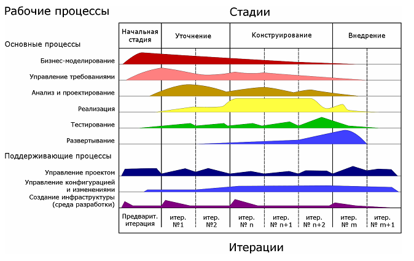

голодание (starvation) - В TOC - условие бездействия ограничения из-за отсутствия материала для обработки.
Использование: В традиционном производстве голодание применяется ко всем рабочим центрам; Напротив, в системе барабан-буфер-веревка основное внимание уделяется предотвращению голодания в ограничении, потому что голодание в ограничении приводит к потере пропускной способности. Ограничение защищено от голодания буфером между ограничением и вышестоящими рабочими центрами.
Три источника потери пропускной способности в барабанно-буферно-канатной системе: голодание, засорение (засор) и обрыв связи.
См.: засор, поломка.
#производство
Примечание АВ: В ИТ-проектах, когда проект уже запущен аналитик нужен на 20-30% доступной мощности. Картинка из RUP

Поэтому Аналитиков нагружают другим проектами. Им нужно понять как переключаться между проектами чтобы ресурс-ограничение (разработчики) не голодал. И при этом они смогли быстро отвечать на вопросы разработчиков. Для этого работает буфер запасов перед ограничением (барабан).
Синоним: starvation